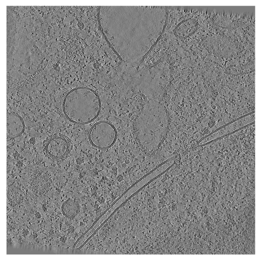
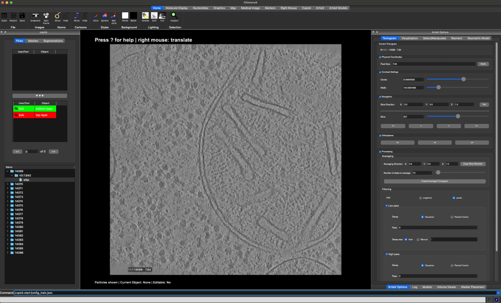
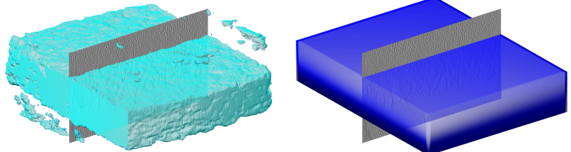
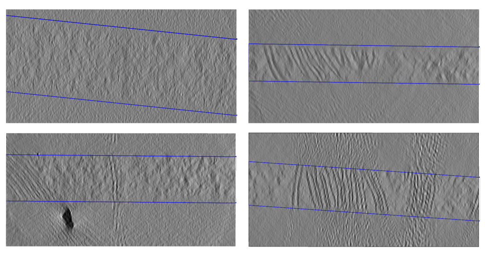

Sample boundaries
Predicting sample boundaries


Biological samples acquired in a cryoET experiment are usually thin slabs of vitrified ice containing the biological specimen of interest. Unfortunately, it is difficult to determine orientation and thickness of the samples ahead of reconstruction. For this reason, volumes reconstructed from cryoET tilt series are often larger than the actual sample and contain a significant amount of empty space (i.e. the vacuum inside the TEM column).
There are several reasons for why it can be useful to determine more accurate sample boundaries, e.g.
- statistical analysis of the sample preparation process
- masking out the vacuum region to reduce the size of the volume
- masking out the vacuum region during the training of a neural network
- capping of membrane segmentations to define topological boundaries
Below, we will show how to use the copick CLI, copick-torch and octopi to predict sample boundaries for datasets 10301 and 10302 from the CZ cryoET Data Portal.

Step 0: Environment and Pre-requisites
For the purpose of this tutorial we will assume that we are working on a machine with access to an NVIDIA GPU and a working CUDA installation. Before we can start, we need to install the necessary software. We will use the following tools:
1. ChimeraX and ChimeraX-copick (for visualization and annotation)
Download and install ChimeraX from here. After installing ChimeraX, install the ChimeraX-copick extension by running the following command in ChimeraX:
Alternatively, you can use napari-copick for annotation in napari.
2. Copick CLI, copick-utils, and copick-torch (for processing steps)
3. Octopi (for training and inference)
Step 1: Setup your copick projects
We will create two copick projects that use datasets 10301 and 10302 from the CZ cryoET Data Portal. Both datasets stem from the same experiments and have the same characteristics, but the tomograms in dataset 10301 have protein annotations. We will use dataset 10301 as a training set and evaluate on dataset 10302.
We will store new annotations in a local directory, called the "overlay", while the tomogram image data is obtained from the CZ cryoET Data Portal.
First, create the configuration file for the training set:
copick config dataportal \
-ds 10301 \
--overlay /home/bob/copick_project_train/ \
--output config_train.json
Next, add the pickable objects that we will use throughout the tutorial:
- top-layer -- the top layer of the sample (particle, for point annotations)
- bottom-layer -- the bottom layer of the sample (particle, for point annotations)
- sample -- the sample itself (segmentation object)
- valid-area -- the valid area of the reconstructed tomogram (segmentation object)
- valid-sample -- the sample excluding the invalid reconstruction area (segmentation object)
copick add object -c config_train.json \
--name top-layer --object-type particle --label 100 \
--color "255,0,0,255" --radius 150
copick add object -c config_train.json \
--name bottom-layer --object-type particle --label 101 \
--color "0,255,0,255" --radius 150
copick add object -c config_train.json \
--name sample --object-type segmentation --label 102 \
--color "0,0,255,128" --radius 150
copick add object -c config_train.json \
--name valid-area --object-type segmentation --label 103 \
--color "255,255,0,128" --radius 150
copick add object -c config_train.json \
--name valid-sample --object-type segmentation --label 2 \
--color "0,255,255,128" --radius 150
Now repeat this process for the evaluation set, which includes both datasets 10301 and 10302:
copick config dataportal \
-ds 10301 -ds 10302 \
--overlay /home/bob/copick_project_evaluate/ \
--output config_evaluate.json
copick add object -c config_evaluate.json \
--name top-layer --object-type particle --label 100 \
--color "255,0,0,255" --radius 150
copick add object -c config_evaluate.json \
--name bottom-layer --object-type particle --label 101 \
--color "0,255,0,255" --radius 150
copick add object -c config_evaluate.json \
--name sample --object-type segmentation --label 102 \
--color "0,0,255,128" --radius 150
copick add object -c config_evaluate.json \
--name valid-area --object-type segmentation --label 103 \
--color "255,255,0,128" --radius 150
copick add object -c config_evaluate.json \
--name valid-sample --object-type segmentation --label 2 \
--color "0,255,255,128" --radius 150
Step 2: Annotate the training set
Open ChimeraX and start the copick extension by running the following command in the ChimeraX command line:

This will open a new window with the copick interface. On the top left side you will see the available objects, on the bottom left you can find a list of runs in the dataset. On the right side you can find the interface of ArtiaX (the plugin that allows you to annotate objects in ChimeraX).
Double-click a run's directory (e.g. 14069) in the run list to show the available resolutions, double-click the
resolution's directory (VS:7.840) to display the available tomograms. In order to load a tomogram, double-click the
tomogram.
The tomogram will be displayed in the main viewport in the center. Available pickable objects are displayed in the list on the left side. Select a pickable object (e.g. top-layer) by double-clicking it and start annotating the top-border of the sample by placing points on the top-border of the sample.
You can switch the slicing direction in the Tomogram-tab on the right. You can move through the 2D slices of the
tomogram using the slider on the right or Shift + Mouse Wheel. For more information on how to use the copick interface,
see the info box below and refer to the ChimeraX documentation.
Keyboard Shortcuts
Particles
--Remove Particle.00Set 0% transparency for active particle list.55Set 50% transparency for active particle list.88Set 80% transparency for active particle list.aaPrevious Particle.ddNext Particle.saSelect all particles for active particle list.ssSelect particles modewwHide/Show ArtiaX particle lists.
Picking
apAdd on plane modedpDelete picked modedsDelete selected particles
Visualization
ccTurn Clipping On/OffeeSwitch to orthoplanes.ffMove planes mouse mode.qqSwitch to single plane.rrRotate slab mouse mode.xxView XY orientation.yyView YZ orientation.zzView XZ orientation.
Info
?Show Shortcuts in Log.ilToggle Info Label.
At the end of this step, you should have annotated the top- and bottom-layer of the all 18 tomograms in the training set.


Step 3: Create the training data
Valid reconstruction area
Next, we will create the training data for the sample boundary prediction. First, we will create bounding boxes that
describe the valid reconstruction area in each tomogram. In most TEMs, the tilt axis is not exactly parallel to
either of the detector axes, causing tomograms to have small regions of invalid reconstruction at the corners. Using
copick process validbox, we can compute 3D meshes that describe the valid reconstruction area in each tomogram.
In this case, we will assume an in-plane rotation of -6 degrees.
You can now visualize the created bounding boxes in ChimeraX by restarting the copick interface and selecting the
valid-area object in the Mesh-tab on the left side.


Sample
Now, we will use the points created in Step 2 to create a second 3D mesh that
describes the sample boundaries. We do this by fitting cubic B-spline surfaces to the top and bottom boundary points
using copick convert picks2slab. This command fits independent spline surfaces to each set of picks, then connects
them with side walls to form a closed slab mesh.
copick convert picks2slab -c config_train.json \
-i1 "top-layer:bob/1" -i2 "bottom-layer:bob/1" \
-t "wbp@7.84" \
-o "sample:picks2slab/0"
Intersection
Next, we will intersect the valid reconstruction area with the sample to create a new object that describes the valid
sample area. We do this using copick logical meshop:
copick logical meshop -c config_train.json \
--operation intersection \
-i "valid-area:bob/0" \
-i "sample:picks2slab/0" \
-o "valid-sample:meshop/0"
You can now visualize the final 3D mesh for training in ChimeraX by restarting the copick interface and selecting the
valid-sample object in the Mesh-tab on the left side.

Training segmentation
Finally, we will create a dense segmentation of the same size as the tomogram from the 3D mesh using
copick convert mesh2seg:
copick convert mesh2seg -c config_train.json \
-i "valid-sample:meshop/0" \
--tomo-type wbp \
-o "valid-sample:mesh2seg/0@7.84"
The resulting segmentations will have the same name as the input object. You can now visualize the
segmentations in ChimeraX by restarting the copick interface and selecting the valid-sample object in the
Segmentation-tab on the top left part of the interface.
Step 4: Train the model
Create training targets
We will use octopi to train a 3D U-Net model for sample boundary prediction. First, we need to create training target segmentations that octopi can use. We pass the segmentation from the previous step as a segmentation target:
octopi create-targets -c config_train.json \
--seg-target "valid-sample,mesh2seg,0" \
-alg wbp -vs 7.84 \
-name sampletargets -uid train-octopi -sid 0
This will create a new segmentation volume with name sampletargets, user train-octopi and session 0.
Train the model
Next, we will train the octopi model using the training targets. Octopi uses a SmartCache data loading strategy that efficiently samples training patches from the segmentation volumes:
octopi train -c config_train.json \
-tinfo "sampletargets,train-octopi,0" \
-alg wbp -vs 7.84 \
-o outputs/ \
-vruns 14069,14070,14071 \
-truns 14072,14073,14074,14075,14076,14077,14078,14079,14080,14081,14082,14083,14084,14085,14086 \
-nepochs 100
In this case, runs 14069, 14070, and 14071 will be used for validation, while the remaining runs will be used for
training. The model will be saved in the outputs/-directory.
Step 5: Segment the evaluation set
Now, we will run inference on the evaluation set. For demonstration purposes we will only evaluate on four tomograms:
octopi segment -c config_evaluate.json \
-mc outputs/model_config.yaml \
-mw outputs/best_model_weights.pth \
-alg wbp -vs 7.84 \
-seginfo "segmentation,output,0" \
-runs 14114,14132,14137,14163
This will create a new segmentation volume with name segmentation, user output and session 0 for the tomograms
14114, 14132, 14137, and 14163. You can now visualize the segmentations in ChimeraX by restarting the copick interface
and selecting the segmentation object in the Segmentation-tab on the top left part of the interface.

Step 6: Post-processing
Finally, we will post-process the segmentations to create the final sample boundaries. The segmentations can contain
small isolated regions that are not part of the sample. We use copick convert seg2slab to fit a box with
parallel sides to the segmentation. This extracts the largest connected component and fits two parallel planes via
differentiable IoU optimization:
copick convert seg2slab -c config_evaluate.json \
-r 14114 -r 14132 -r 14137 -r 14163 \
-i "segmentation:output/0@7.84" \
--label 2 \
-o "valid-sample:seg2slab/0"
You can now visualize the final 3D mesh for evaluation in ChimeraX by restarting the copick interface and selecting the
valid-sample object in the Mesh-tab on the left side. Below you can see the final result for the four tomograms
14114, 14132, 14137, and 14163.
